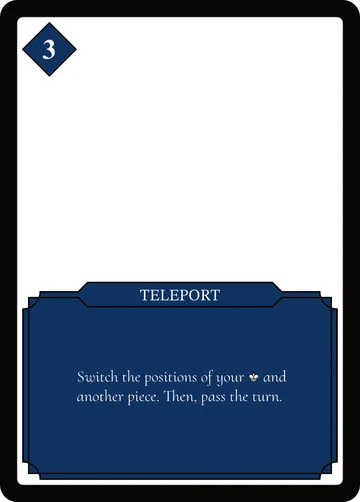
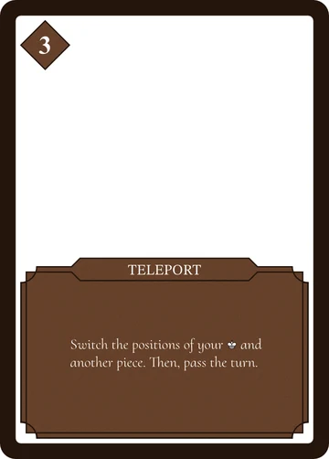
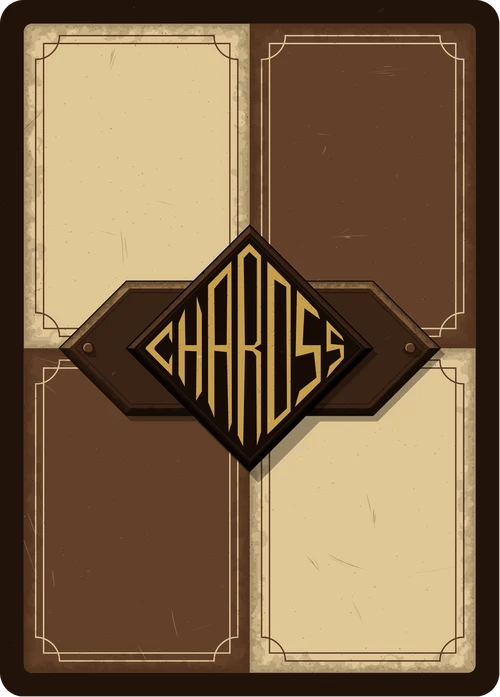
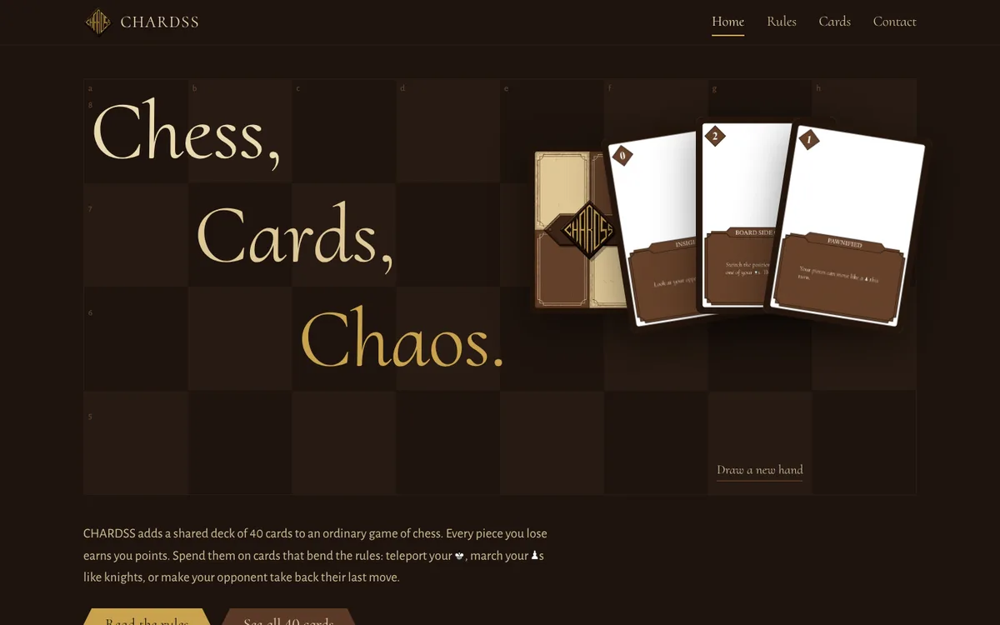

CHARDSS
Cards, Chess & Chaos. It's chess with a shared deck of 40 cards, and every card bends one rule of chess. You pay for cards with the pieces you lose.
- My role
- Sole designer: rules, cards, card frames
- Team
- Solo project
- Timeline
- 2025 to now
- Tools
- Affinity, Python, AI coding tools
- Status
- Playable. Rules and all 40 cards

The idea
Both players draw from one shared deck. Each turn you may play one card, then make one move, then draw back to three cards.
Every card bends one rule of chess. Your Pawns capture sideways. Your King swaps places with a Rook. Your opponent has to change their last move. All normal chess rules still apply unless a card says otherwise.


Your losses pay for your cards
You earn points when your own pieces are captured, equal to their chess value. Capturing your opponent's pieces earns you nothing.
| Piece lost | Points earned |
|---|---|
 Pawn Pawn | 1 |
 Knight Knight | 3 |
| Bishop | 3 |
| Rook | 5 |
 Queen Queen | 9 |
So the player who is behind on material has the most points to spend. Most cards cost 1 or 2, so losing a Pawn or two is enough to play one.
Pricing the cards
Costs run from 0 to 39. Almost everything sits between 0 and 3, so cards come out often:
| Cost | 0 | 1 | 2 | 3 | 4 | 7 | 39 |
|---|---|---|---|---|---|---|---|
| Cards | 4 | 13 | 14 | 5 | 2 | 1 | 1 |
A family of cards lets your Pawns move like another piece for a turn. Their costs follow the strength of that piece: Kingified costs 1, Knightified and Bishopified 2, Rookified 3 and Queenified 4.
The outlier is Armageddon. It costs 39, the total value of all your pieces except the King (8 Pawns, 2 Knights, 2 Bishops, 2 Rooks and a Queen). It wins the game if your King is the only piece you have left on the board.
Rules that hold up
Cards that bend chess rules can create positions chess has no answer for. Three rules keep the game playable:
- Cards beat rules, but legality beats cards. A card wins over normal chess rules, but you can't play a card if the result would be an illegal position. For example, you can't skip your move while in check.
- One card per turn, and play before you move. Turns stay readable: card, move, draw.
- When the deck runs out, it's chess. Nobody draws from an empty deck. Once both hands are empty, the game finishes as normal chess.
The look
The first card fronts were colour-coded in blue, red, green and purple. The current version uses one brown frame for every card.

Version 1Colour-coded fronts
CurrentOne frame for all 40 cards
Card backShared by all 40 cards
The game's font, Chardss Display, is Cormorant with chess-piece glyphs added (pieces by Colin M.L. Burnett). Typing {King} on a card or on the website gives you the King icon. The card data lives in one JSON file, and every change to the rules or cards rebuilds the website's rules, card pages and images.

Where it started
The first prototype, from March 2025, was a Python chess engine that plays full chess with castling, en passant and a clock. It never got card mechanics. The game became a physical card deck instead, with the website for rules and card demos.